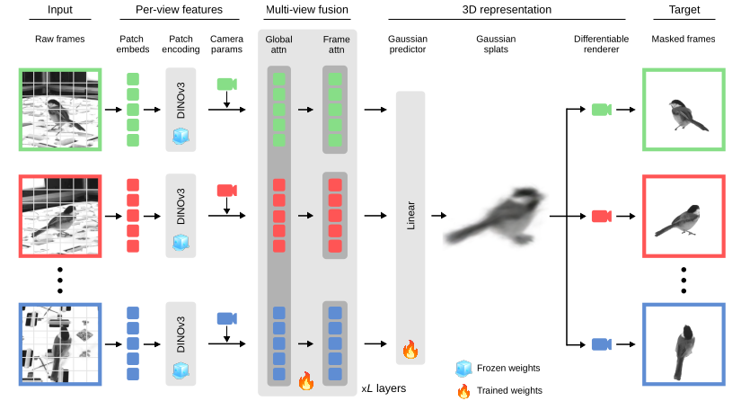
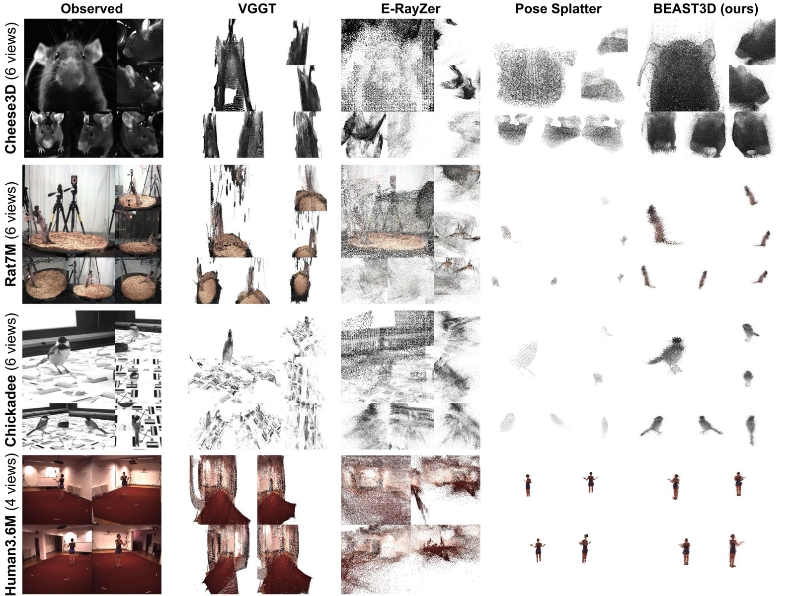
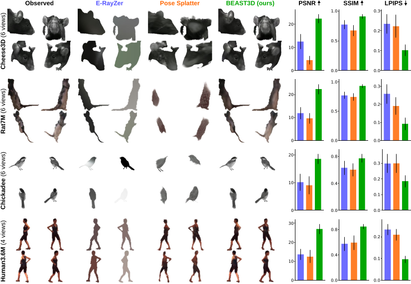
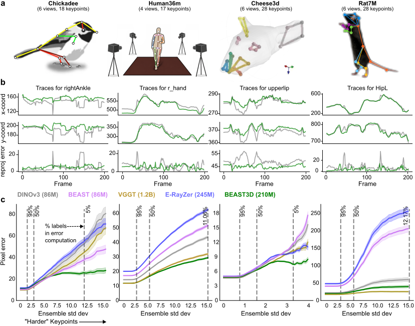
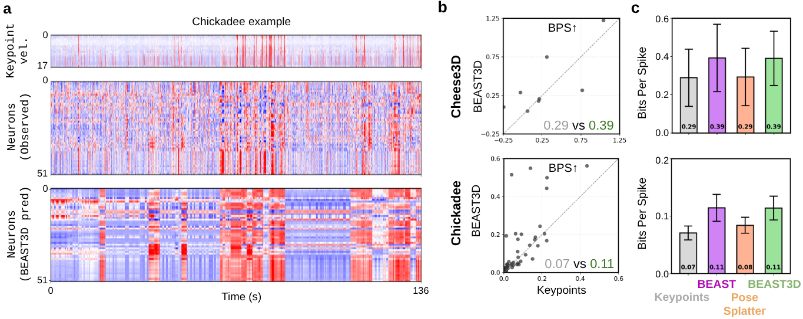

Animal behavioral analysis and neural encoding from multi-view video via Gaussian splatting
Multi-view video recordings are increasingly used to capture the 3D movements of animals in experimental settings, yet extracting rich 3D representations from these recordings remains challenging. Supervised pose estimation requires extensive manual annotation, while general-purpose 3D reconstruction models trained on generic scene datasets fail on the specialized imagery and sparse-view setting of laboratory experiments. We address these limitations with BEAST3D, a self-supervised pretraining framework that learns 3D visual representations from unlabeled, calibrated multi-view video. BEAST3D uses a vision transformer to predict 3D Gaussian splats that reconstruct held-out views through differentiable rendering, while simultaneously segmenting the animal from the background. BEAST3D reconstructs 3D structure with as few as four views by conditioning directly on known camera parameters — unlike general-purpose models, which must estimate camera geometry from dense overlapping viewpoints that are seldom available in lab settings. Through comprehensive evaluation across four species, we demonstrate that BEAST3D produces rich, viewpoint-invariant features that transfer effectively to three downstream tasks: novel view synthesis, multi-view pose estimation, and neural encoding. BEAST3D thus establishes a versatile framework for behavioral analysis that leverages 3D structure in modern multi-view laboratory recordings.
Learns 3D Gaussian splats from unlabeled multi-view video by reconstructing held-out views through differentiable rendering — no keypoint annotations required.
Conditions on known calibration to reconstruct from as few as four sparse views, where general-purpose models that must estimate camera geometry break down.
Rich, viewpoint-invariant features power novel view synthesis, multi-view pose estimation, and neural encoding — across mouse, rat, chickadee, and human.
BEAST3D represents each frame as a set of 3D Gaussian splats. Below are the predicted point clouds (position + color) for one example frame per dataset — drag to rotate, scroll to zoom. This is the same spatially-grounded representation used for novel view synthesis, pose estimation, and neural encoding.
BEAST3D is a masked autoencoder with 3D Gaussian splats as its intermediate representation. At each training step, one view is held out and reconstructed from the remaining views, so the model must infer real 3D structure rather than memorize 2D appearance. It conditions on known camera calibration and uses a frozen DINOv3 encoder, focusing its capacity on the subject's geometry and appearance.
Synchronized, calibrated views feed the model. SAM3 segmentation masks are computed once offline and distilled into the model — no segmentation network is needed at inference.
A frozen DINOv3 ViT-B/16 tokenizes each view; per-pixel camera rays are encoded as Plücker coordinates and fused with the image tokens to ground them geometrically.
A VGGT-pretrained transformer alternates per-frame and global attention across views; a linear head decodes each patch token into a 3D Gaussian splat.
GSplat renders the held-out target views. Photometric, perceptual, and mask losses on those views train the whole pipeline self-supervised.

The BEAST3D framework. Reference views are tokenized by a frozen DINOv3 encoder and combined with camera-ray tokens, fused by a VGGT geometry transformer (frozen + trained weights), and decoded into 3D Gaussian splats. A differentiable renderer reconstructs masked target views; only the held-out views supply the training signal.
On the close-up, sparse-view imagery of laboratory rigs, general-purpose models (VGGT, E-RayZer) produce noisy or empty reconstructions, and the animal-specific Pose Splatter shows shape-carving artifacts. BEAST3D recovers clean, well-localized 3D structure and a foreground segmentation of the subject — across all four species.

3D point clouds from BEAST3D and leading baselines. An example scene from each dataset (left) is encoded into a 3D point cloud by general-purpose models (VGGT, E-RayZer) and tailored per-dataset models (Pose Splatter, BEAST3D). Points are colored by the corresponding pixel color. BEAST3D achieves strong reconstructions while also segmenting the subject from the background.
Rendering held-out viewpoints is a direct test of 3D understanding: a model can only produce geometrically consistent renderings if it has truly inferred the scene's 3D structure. BEAST3D outperforms E-RayZer and Pose Splatter on PSNR, SSIM, and LPIPS across all four datasets, in both within-subject and cross-subject settings.

High-fidelity novel view synthesis. Left: held-out target views and reconstructions conditioned on the remaining views. Right: per-dataset PSNR, SSIM, and LPIPS — BEAST3D (green) leads across metrics and datasets.
Because the splats are full 3D, we can orbit the camera freely around each reconstructed subject — here are free-viewpoint renders for every dataset:
Free-viewpoint orbits of the predicted 3D Gaussian reconstructions.
Does pretraining for 3D structure yield better pose estimators in the low-annotation regime typical of neuroscience? Using only 100 labeled instances per dataset within the Lightning Pose pipeline, BEAST3D features achieve the best pixel error on nearly all datasets and the lowest 3D reprojection error — producing visibly smoother keypoint traces. Notably, multi-view architecture alone (VGGT, E-RayZer) is not enough: how a model is pretrained matters as much as its capacity for 3D reasoning.

BEAST3D improves pose estimation. a: setups and keypoint skeletons. b: keypoint traces (top) and label-free 3D reprojection error (bottom) for DINOv3 (gray) vs. BEAST3D (green). c: pixel error vs. keypoint difficulty on held-out subjects, trained on 100 labeled instances.
BEAST3D's Gaussian splats are denser than sparse keypoints yet remain spatially grounded,
unlike opaque CLS tokens. Predicting neural activity from these features, BEAST3D
outperforms 3D keypoints and Pose Splatter, and matches BEAST CLS tokens —
while keeping spatial structure that lets analyses ask which body parts drive a
neuron. These trends hold across mouse facial motor nucleus and chickadee hippocampus.

BEAST3D features improve neural encoding. a: observed vs. predicted activity on held-out timepoints (Chickadee). b: per-neuron Bits-Per-Spike, BEAST3D vs. keypoints. c: average BPS across keypoints, BEAST, Pose Splatter, and BEAST3D, with S.E.M. across neurons.
Press play to watch the 6-view input video alongside BEAST3D's reconstructed 3D point cloud through a 1-minute chickadee bout, synced to the raster below: keypoint velocity, ground-truth spikes, and BEAST3D-predicted activity for all 52 hippocampal neurons. Drag the 3D view to rotate; use the time slider to scrub.
@article{wang2026beast3d,
title = {BEAST3D: Animal behavioral analysis and neural encoding
from multi-view video via Gaussian splatting},
author = {Wang, Yanchen and Aharon, Lenny and Zhu, Wangshu and
Daruwalla, Kyle and Zhang, Linghua and Zou, Jiaru and
Chettih, Selmaan and Hou, Helen and Paninski, Liam and
Whiteway, Matthew R.},
year = {2026}
}